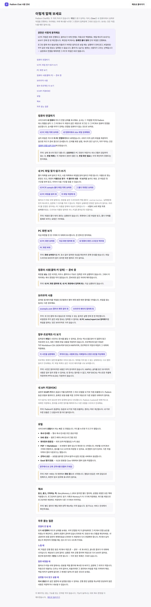

④ 북AI
게스트 기기 저장과 로그인 뒤 다른 기기에서 이어 보기를 확인합니다.
준비물: 로그인 없이 1, 3단계까지 볼 수 있어요. 2, 4단계는 준비된 계정이 필요해 지금은 화면 자리를 비워 두었습니다.
1단계 · 북AI에서 읽기 기록을 남겨요.
이렇게 해요: https://bookai.padiem.net/ 열기
이렇게 보여요: 서가와 “책 열기” 버튼 표시
화면에서 확인하는 것: 화면이 열렸는지·로드 걸린 시간
2단계 · 읽은 위치와 기록을 이어서 남겨요.
[화면 준비 중 — 시험 계정 확정 후 촬영]
이렇게 해요: 오른쪽 위 TODAY를 열고(데스크톱은 서가에 마우스를 올려야 보임) “이어 읽기”를 눌러요
이렇게 보여요: 읽기 화면이 열리고 진행 위치가 저장돼요.
화면에서 확인하는 것: 화면 상태·저장 레코드·동기화 상태·걸린 시간
3단계 · 로그인하면 다른 기기에서도 이어서 볼 수 있어요.
이렇게 해요: Chat 사용 안내에서 게스트 저장 문구 확인
이렇게 보여요: 기기에 저장된다는 안내와 로그인 후 다른 기기에서 잇는 문구 표시
화면에서 확인하는 것: 안내 표시·걸린 시간

4단계 · 다른 기기에서 읽던 내용을 이어 봐요.
[화면 준비 중 — 시험 계정 확정 후 촬영]
이렇게 해요: 같은 계정 로그인 상태으로 새 브라우저 프로필(다른 기기)에서 다시 열기
이렇게 보여요: 계정에서 내려받은 진행 위치로 “정확한 위치에서 이어 읽기” 표시
화면에서 확인하는 것: 두 기기 화면·응답 걸린 시간·동기화 상태
영상과 자막
영상 준비 중 — 녹화와 자막은 아직 이 화면에 올리지 않았습니다.
촬영 범위: 게스트 1, 3단계.
계정 2, 4단계는 [화면 준비 중 — 시험 계정 확정 후 촬영]로 두고 같은 자리에 이어 붙입니다.